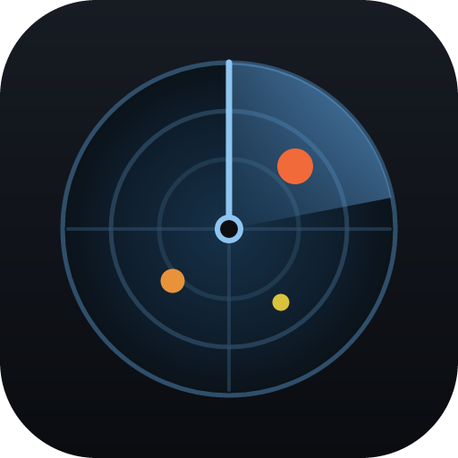

Радар для сміття на диску
Не файловий менеджер. TrashRadar сам проходить диски, знаходить кандидатів на видалення — великі й старі файли, дублікати, кеші застосунків, порожні теки — і показує одну цифру: скільки місця можна звільнити. Видалення йде через Quarantine, тож будь-яку дію можна відкотити.
Встановлена копія оновлюється сама: застосунок перевіряє нові версії при старті й пропонує оновитись одним натисканням.
Детектори за категоріями: великі файли, давно не відкривані, дублікати, кеші застосунків, тимчасові файли, порожні теки.
Позначене не зникає одразу: воно їде в карантин, звідки будь-що повертається на місце. Остаточне видалення — окрема дія.
Читання MFT напряму й дельти через журнал USN: повторний запуск бачить зміни, не перескановуючи диск заново.
Мініатюри зображень і кадри відео просто в сітці — рішення приймається очима, а не за іменем файла.